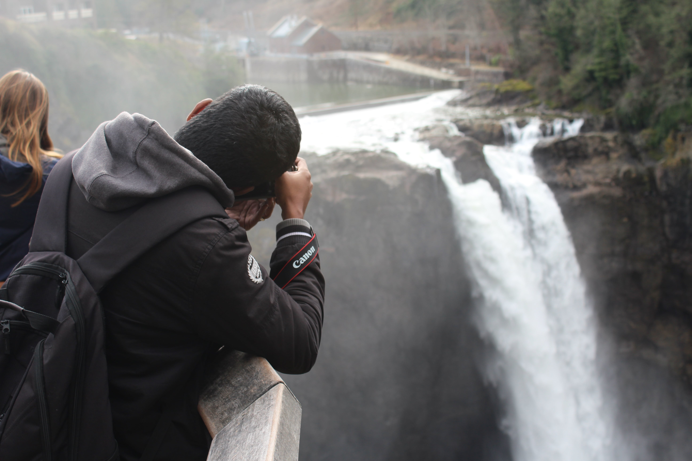

Snoqualmie

Metadata
| Date | Location | F-stop | Exposure time | ISO |
|---|---|---|---|---|
| 3/5/2017 | Snoqualmie, WA | f/5.6 | 1/160s | ISO-100 |
| Date | 3/5/2017 |
|---|---|
| Location | Snoqualmie, WA |
| F-stop | f/5.6 |
| Exposure time | 1/160s |
| ISO | ISO-100 |
Background
A candid of a photographer capturing the majestic Snoqualmie Falls.